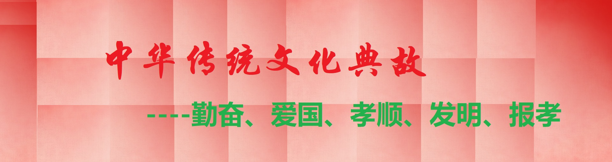
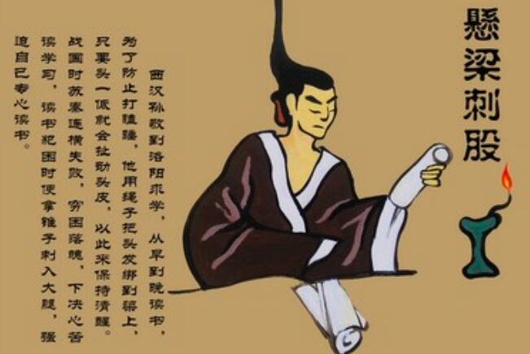
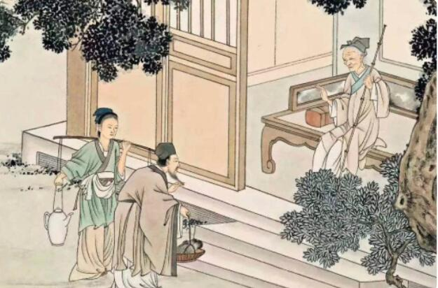
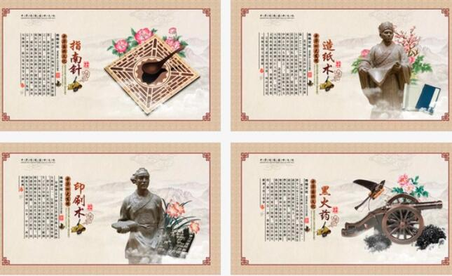

传统典故
勤奋好学
△
悬梁刺股
凿壁偷光
萤囊映雪
闻鸡起舞
牛角挂书
爱国名人
△
詹天佑
华罗庚
郑成功
杨靖宇
抗日少年王二小
孝敬父母
△
涌泉跃鲤
乳姑不怠
哭竹生笋
弃官寻母
尝粪忧心
报孝祖国
△
战斗英雄董存瑞
文天祥宁死不屈
爱国将领吉鸿昌
四大发明
△
造纸术
指南针
火药
印刷术
“造纸术、指南针、火药、印刷术”四大发明是中国古代创新的智慧成果和科学技术

废寝忘食地刻苦学习
抗日小英雄的典型

孝敬父母的典型
为中华崛起而读书

中国古代四大发明
为中华之崛起而读书
《牛角挂书》书挂在牛角上,一边骑牛一边读书,十分专注
《随月读书》白班晚读,家贫无灯,借月光夜读
《下帷读书》形容闭门谢客、专心读书学习的典故
四大发明推动了世界历史进程，传承知识文化
造纸术是人类文明史上的一项杰出的发明创造
指南针是中国古代智慧的劳动人民长期认识磁学的结果
火药是人类历史文明的一项重要发明
印刷术为知识的传播和交流创造了必要条件